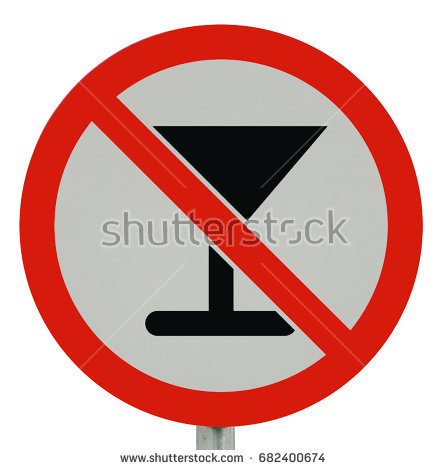
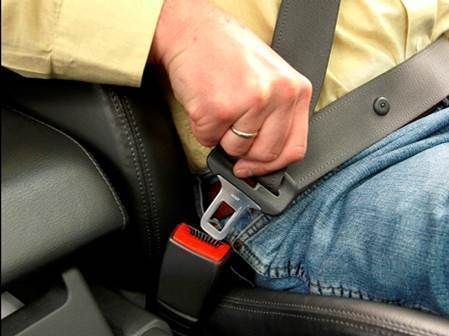
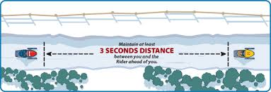
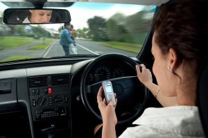
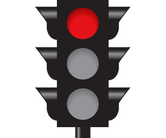
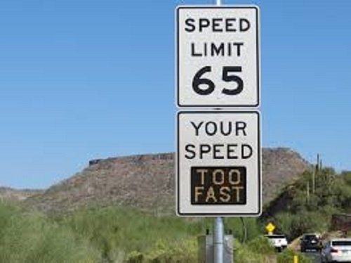
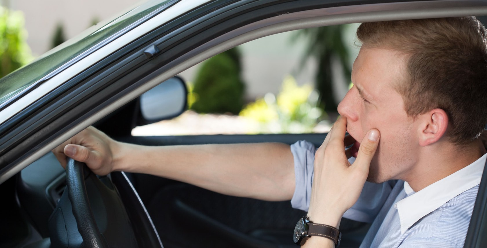
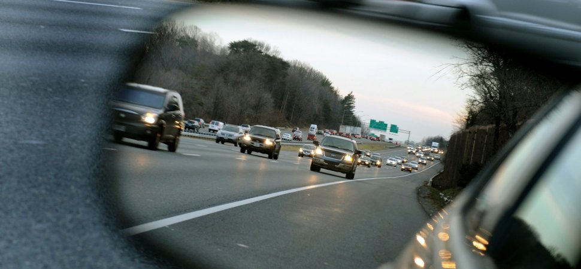
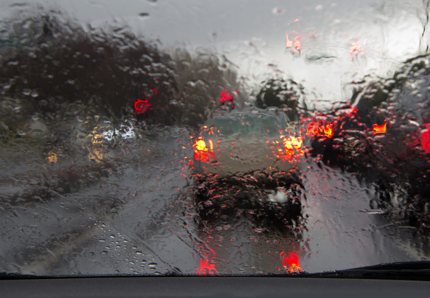
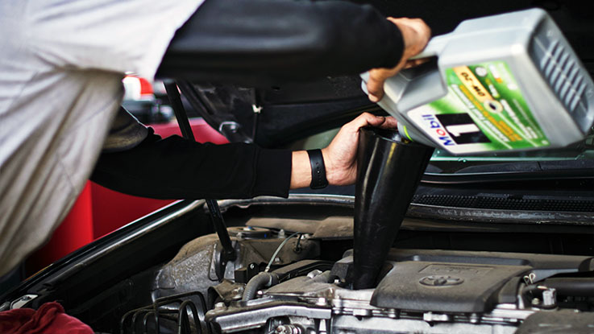

1.Never Drink & Drive
This is most important rule of driving. Alcohol causes a number of impairments that lead to the car accident. At low blood alcohol levels, causes the intoxication decrease the reaction time, lower the guessing power & inhibitions. At higher alcohol, blurred vision & loss of consciousness. Drunk & drive is crime & you have to pay heavy fine & also get you in jail. So, always remember this point.
2.Always Wear Seat Belt
It is most essential factor to do for a car driver. If you wear a seat belt then it prevents you from being thrown around the inside of a crashing vehicle or thrown through the out of the vehicle during any accident & save your life. It reduced the risk of serious injury by 45% to 50%. In majority of car crashes, people have a greater chance of surviving if they wear a seat belt.
3.Follow Three Second Rule - Keep a Safe Distance
It is highly recommended factor to the car driver to maintain a safe distance between the cars ahead. If the other vehicle makes a sudden turn or stop, then the driver requires enough time to handle that situation. I can be very difficult to estimate the distance while driving. So, you must have to follow Three Second Rule. It is simple rule, when the car ahead of you passes a permanent object on the side of road, start counting at least 3 second passed before your car passes the same object At night or in bad weather condition this second can be doubled.
4.Always Avoid Distractios
While driving, any kind of distraction like talking on mobile phones, eating food etc is very dangerous for ours & also others. Drivers are not able to give full attention on the road & their reaction time becomes slow in critical conditions. Many studies show that this distraction decreases the reaction time.
5.Never Break Red Signal
It is most common causes for road accidents. When you take a risk to run on red signal, another car will turn, it causes some serious accidents. So, never break red signal & always wait for green signal.
6.Always Drive In Speed Limit
Generally youngster loves speed, but this fun cost you your life or permanent disabilities. It is one of the most important factor controls the traffic accidents. Almost every year over speeding more than 45% of the serious crashes. Due to over speeding your reaction times becomes very less. It is more dangerous & serious for our life. So, it is advisable to drive within the speed limit.
7.Avoid the Drowsiness While Driving
If you are feeling drowsy or sleepy they you must have to avoid driving. It is as dangerous as driving as drunk. A little bit of drowsiness can be serious for your life. So, it is recommended that you have good speed before driving. If not then allow to other drive or take cab.
8.Watch Out For Drivers On the Road
Sometimes it is depends how safely you drive you obeying all rules. Many times in the cases someone else crashes into you. So keep you're an eye on the on road & others well by checking the mirrors & side streets. You can never assume the action of another driver on the road. Even after the left indicator shows, he might not take left turn.
9.Be Extra Careful in Bad Weather or Poor Driving Conditions
A person is considered a good driver if he is driving in any weather conditions. It requires a more attention than normal driving. You must have to drive below speed limit, maintain proper distance, careful on turns & sleepy roads etc..
10.Regular Maintain Your Vehicle
Every vehicle owner, they always maintain their vehicle like breaks, engine oil, tire pressure, engine etc. you must check all vehicles main parts when you are planning to drive on highway or long journey. Because any failure of these it causes Very serious accident.
@Copyright 2019 Drive Safety